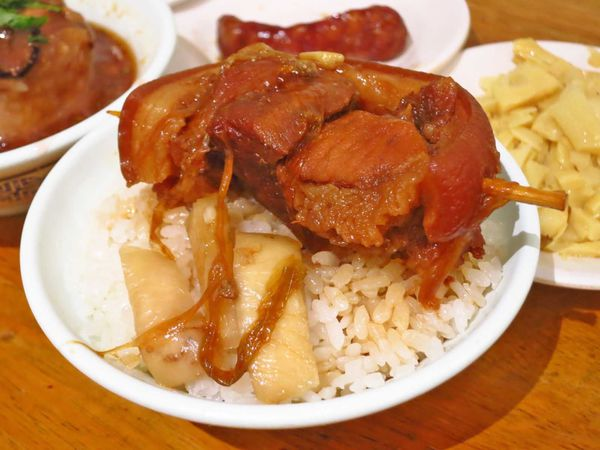
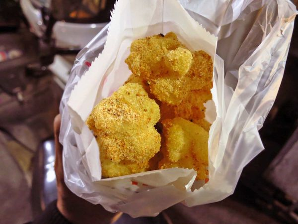

| 台中 | 彰化 | 苗栗 |
彰化：
來到彰化就是要吃他的滷肉飯囉~!彰化的滷肉飯可是相當的好吃呢! 他們自己研發出一道秘密醬汁讓他們的滷肉吃起來更加的香，吃起來味道更多樣， 還有提到彰化絕對不能忘了他的肉圓，裡面的餡料有一整顆的香菇，肉塊也放的滿滿滿， 如果是食量很大的人吃一顆不夠，吃個兩顆應該就會飽了吧!
首先! 第一家：阿章爌肉飯
店內的室內空間相當的大，是以屋頂的半開放式空間進去的時候裡面都坐滿人，
但流動率滿快的～因此不用等太久此外，如果內用的話，直接找位子坐就可以了，
這裡的價格相當的平價不會因為是人氣的排隊名店，
價格就特別的高這爌肉滷的非常的好不會太爛，但又有保持原始樣貌吃下去，
帶著微鹹香的感覺真的會令人食指大動～此外他們的米飯是粒粒分明淋上爌肉飯的滷汁也是一極棒的～

(圖片來源：https://goo.gl/TS8zYp)
第二家：古月館糯米炸
這種小點心，對於除了彰化以外縣市的人來說其實有點陌生，
因為比較少見而這次來到彰化，當然就不能錯過他囉當然，要吃的話也要選對間，
像是今天要介紹位於彰化太平街上的這一間是在地人推薦必吃的~
千萬別跑錯間，真的值得推薦，不過這家店基本上這只有一樣東西，
所以來了之後就說要點幾份就可以了，也沒有其它口味可以選擇點好之後，
老闆就會開始下鍋油炸把每一顆都炸的酥酥脆脆再沾上花生粉與芝麻這個糯米炸就是把麻吉弄成一小顆後再下去油炸的意思~~
一口吃下，外層超級酥脆，裡面則是非常的澎鬆再加上他們帶有香氣的花生粉甜甜的滋味~
而且他們這家吃起來沒有油耗味，因為這種東西沒有鹹味去壓他如果你的油品質不好，油耗味自然就會出來不過這裡沒有，因此味道非常的讚~

(圖片來源：https://goo.gl/ic5Ab2)